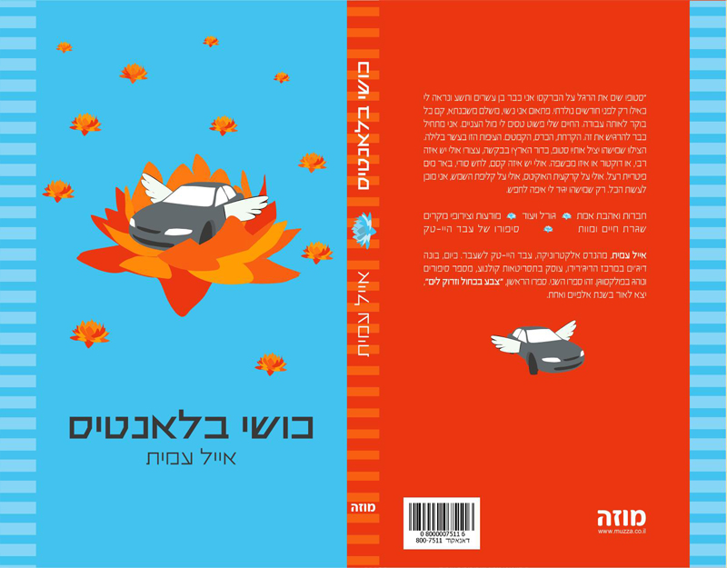
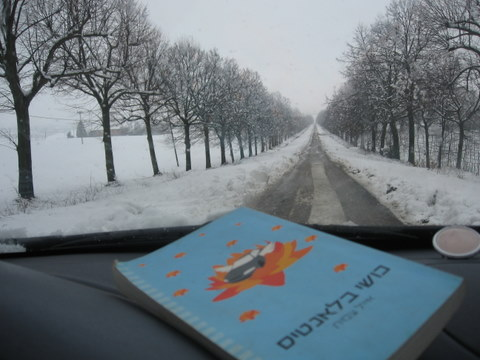
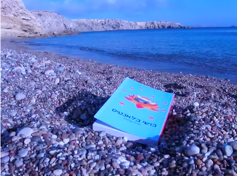
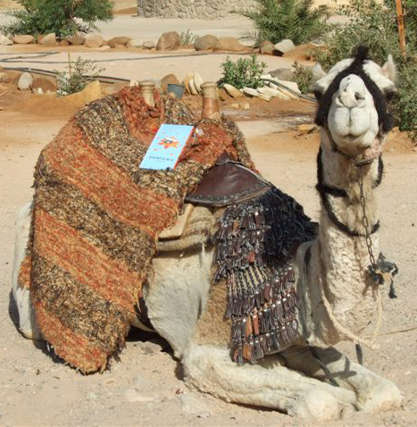

רומן פנטזיה מאת אייל עמית על התעוררות, בחירה, חופש והיציאה מהחיים הנוחים מדי. זמין לרכישה כספר מודפס וכספר אלקטרוני.

ספר התעוררות עם עלילה סיפורית חזקה
כושי בלאנטיס הוא רומן פנטזיה שנוגע בעבדות מודרנית, שגרה נוחה מדי, והכמיהה לחיים שיש בהם יותר חופש, יותר אמת ויותר בחירה.
במרכז הספר עומד איש הייטק שמרגיש שמשהו בחייו כבר לא באמת זז. כלפי חוץ החיים נראים מסודרים, נוחים ובטוחים, אבל בפנים הולכת ונבנית תחושה של תקיעות ושל געגוע לשינוי. מתוך נסיבות מפתיעות ולא שגרתיות הוא נסחף למסע חריג, שמטלטל את נקודת המבט שלו על החיים ועל עצמו.
זהו ספר שמשלב דמיון, מסע פנימי, הומור, ביקורת עדינה על הרגלים ועל נוחות, ושאלות עמוקות על אומץ, זהות והיכולת ללכת אחר הלב.
הספר יכול לדבר במיוחד לקוראים שאוהבים עלילה עם עומק, מסע תודעתי, ואותה תחושה נדירה של סיפור שלא רק קוראים - אלא גם ממשיכים לחשוב עליו אחרי שסוגרים את הספר.
יצא לאור לראשונה בשנת 2004. כיום במהדורה השישית.
הרכישה מחוץ ל־WordPress — קישורים חיצוניים בלבד (אין סליקה מוטמעת באתר).
צילומים המלווים את הספר ומרחיבים את האווירה, הדימויים והעולם שנבנה סביבו.


